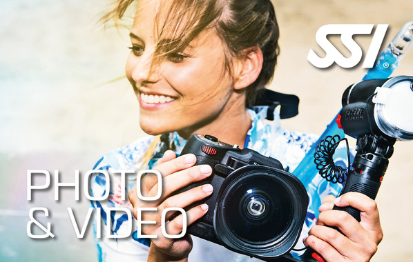

Instagram Photo, Video, and IGTV Downloader
 Toggle navigation Instagram Video/Photo Downloader How to Download Videos/Photos on Android Download Insta Videos on iPhone Private Downloader Profile Photo Downloader English English العربية Français Español Português Türk русский فارسی हिन्दी Bahasa Indonesia 日本語 Deutsch Dutch Italiano Tiếng Việt Українська 한국어Instagram Video / Photo Downloader
Download Instagram Videos & Photos Online
Instagram Photo, Video, and IGTV Downloader
How to use Insta Downloader?
What is this?
By using Instagram Video Downloader you can download videos and photos from Instagram on your directly to your (iPhone, Android device, Pc or Mac) 100% FREE.
All you have to do is just copy URL of video or photo (Image) from instagram then paste it in the above input text box.
Instagram Video Downloader Features : Fast, easy and secure. No need to login in your Instagram account. You can download Instagram videos & photos with just one click. Save & download videos and photos in their original resolution & quality. Save & download instagram videos from private accounts .
How to Download Instagram Videos / Photos
Note: The video or photo which you will download must be from a public Instagram account. But you still able to download videos and photos from private instagram accounts. Just click here .
Step 1: Copy video or photo’s URL from your browser or Instagram app.
On Instagram app:
Tap (iOS) or (Android) above the post and then tap Copy Share URL . The link will be saved to your clipboard.
On PC / Mac:
Right-click on the date of the video or photo on Instagram then click "Copy Link Address" Step 2: Paste URL in the above text box area.
Step 3: Hit" Download "button.
Frequently Asked Questions
Why the video is playing instead of downloading?
You Can solve this issue, instead of left clicking use the Right Click - Save as... and choose the location you'd like to save the video to.Does this service Download Youtube Videos ( )
Sorry, but Youtube isn't supported. Due to Youtube and Google Chrome Webstore policy, we disabled this feature.Can I Save instagram live videos?
You can't save instagram Live videos while streaming but you can download it after they finish streaming.Does Instagram Video Downloader needs any money after some Downloads limit?
this service is Totally Free and has no limit to download.Where my videos saved after download?
Videos usually saved under "Downloads" folder but you may use Save As Option and changed it to another one. However, you can check the download folder by following the below steps: Chrome: Windows: Press [ CTRL + J ] Mac: Press [ Shift + Command + J ] Firefox: Windows: Press [ CTRL + J ] Mac: Press [ Command + J ] Instagram Video & Photo Downloader online
How to Download Instagram Videos & Photos | Privacy Policy | Terms | Contact us | About